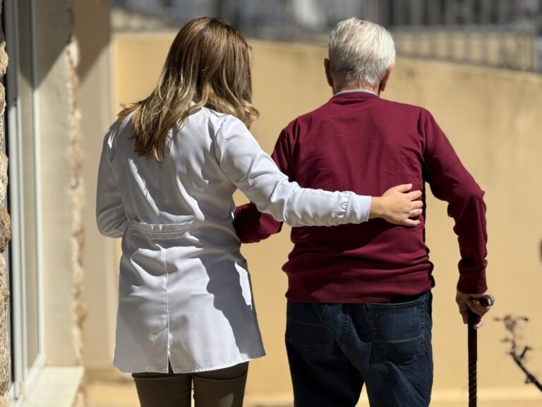

Para o dia a dia
O cuidado será em casa?
Atendimento domiciliar
Avaliar este cuidado ↗
Apoio com alimentação, medicamentos e atividades físicas e cognitivas.
Cuidado especializado para idosos
Segurança, respeito e atenção personalizada para o momento que vocês estão vivendo.
Encontre o cuidado certo
Por onde começar
Escolha o cenário mais próximo da sua necessidade. A avaliação ajuda a entender o formato de acompanhamento.
Para o dia a dia
Apoio com alimentação, medicamentos e atividades físicas e cognitivas.
Durante uma internação
Acompanhamento dedicado no ambiente hospitalar.
Em um período específico
Exames, consultas e pós-operatório com atenção ao momento.
Quando o tempo importa
Uma conversa direta para compreender a cobertura necessária.
Cuidar é estar presente
Em casa, no hospital ou fora dele, o ponto de partida é compreender o que a pessoa idosa e sua família precisam.
Avaliação gratuita
Fale com a Geração de Saúde para avaliar a necessidade da sua família.